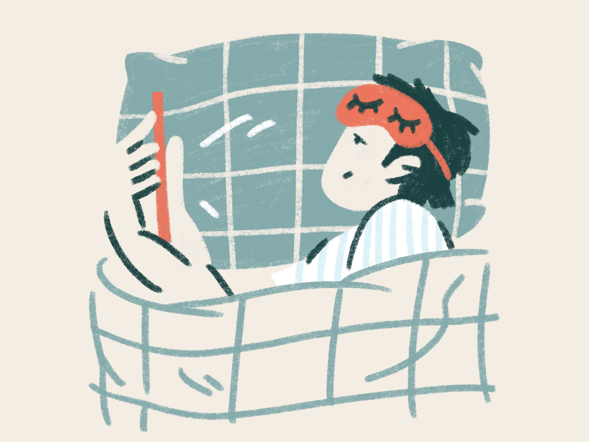
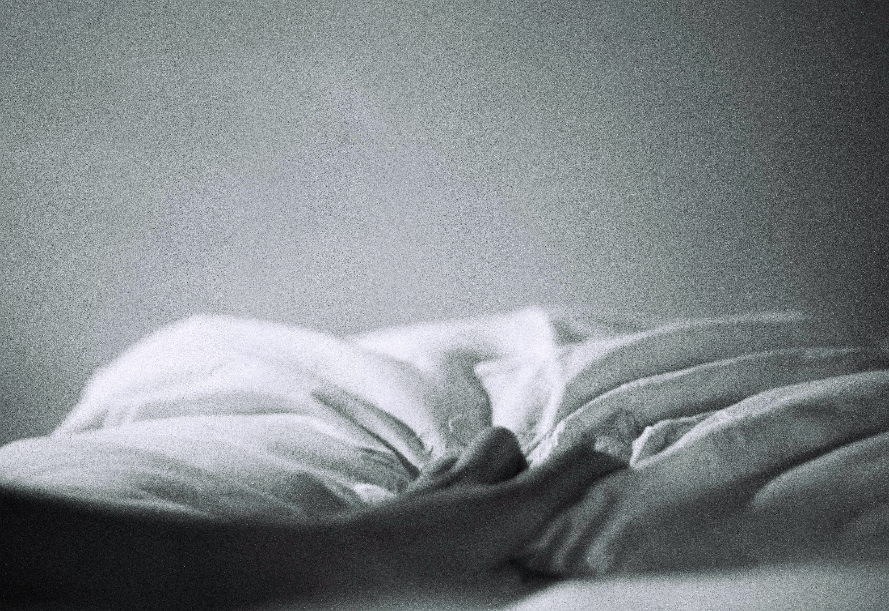
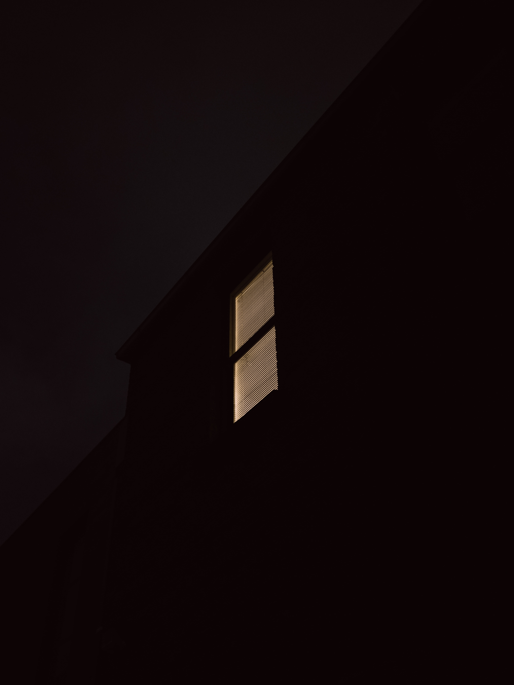

Insomnia
A Sleeping Disorder
-

Is Insomnia are increasing in adults day by day –
According to Centers for disease control and prevention, adults need at least 7-9 hours of sleep in every 24 hour period, depending on their age.
Insomnia is a sleep disorder that regularly effects millions of people Worldwide. Someone with insomnia find its difficult to fall asleep or stay asleep. About a third of all adults reports some insomnia symptoms. 6 to 10% of adults have symptoms severe enough to meet the diagnostic criteria for insomnia disorder. -

Insomnia is really dangerous for adults –
Nowdays 90% of adults are suffering from this disease as they are surrounded by a work pressure, busy life, stress. Lack of sleep may lead to development of type two diabetes. In a study by the university of buffalo in 2009 found a people who slept for less than six hours at night were upto five times more likely to impaired fasting. Those who suffered with chronic insomnia are believed to be more aware to illness and accidents. Lack of sleep can had to decreased performance and problems with memory.
-

What causes Insomnia in adults-
In adult stress is common reason in this competitive world where we are always trying to do better than others doing an quite stressful, changing of job, city, divorced can major reasons. Poor sleep occurs if you work day and night and we use mobile phones at night this also cause insomnia. If we can’t sleep in a day so, first consult to an doctor they give an proper treatment. Thyroid, diabetes , cancer are common diseases occur in today’s life. Smoking and drinking are common in adults.
-
Symptoms
- Difficulty falling asleep at night
- waking up during the night
- waking up too early
- daytime tiredness or sleepiness
- irritability and depression
- increased error or accident
-

What major changes occur in adults sue to insomnia
The major changes occur in insomnia is agening. We required total sleep stays the same or slightly decreased ( 6.5 to 7 hours per night) . It may be harder to fall asleep and you may spend more total in bed. The transition between sleep and waking up is often abrupt . Older people wake up average of 3-4 times each night. Sleep difficulty is annoying problem . Long term insomnia is major cause of auto accidents and depression. Sleep deprivation can eventually cause confusion and mental changes. You can reduce symptoms by taking proper sleep. Sleep apnea , a condition where breathing stops for a long time during sleep cause severe problems
-
Measures-
The ISI is a 7 item self report questionnaires assessing the nature , severity and impact of insomnia. The usual recall period is the last month and dimensions evaluated are severity of sleep onset , sleep maintenance and early morning awakening problem, sleep dissatisfaction, interference of sleep difficulties with day time faculties. It is very important to talk with a provider before taking sleep medicine . However antidepressants effects your sleep. Sometimes a mild antihistamine work better than a sleeping pill for relieving short term insomnia. The most health experts do not recommend these types of medicines.